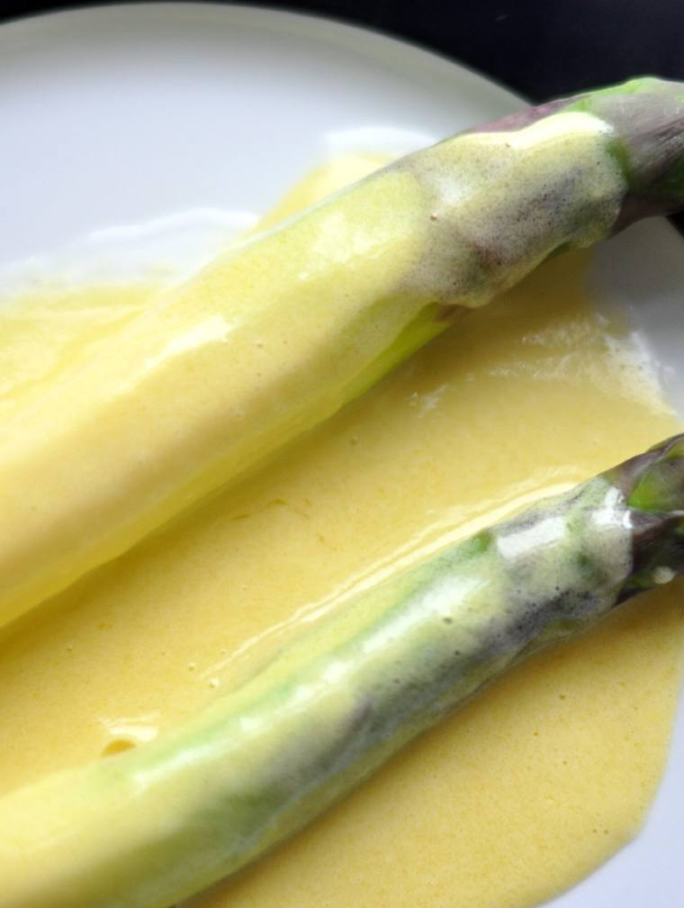

Sauces

Sauces
Sauce hollandaise
Préparation : 10 min
Cuisson : 15 min
Ingrédients (pour 4 personnes)
- 2 jaunes d’œufs
- 125 g de beurre
- 25 g d’eau froide
- ½ citron
- sel, poivre blanc
Quantités adaptées. Les temps de cuisson ne sont pas recalculés.
- Clarifier le beurre à feu doux, le garder entre 55 et 60 °C.
- Fouetter jaunes et eau à feu très doux ou au bain-marie, jusqu’à un sabayon épais, sans dépasser 80 °C.
- Hors du feu, incorporer le beurre en filet en fouettant.
- Ajouter citron, sel et poivre, servir aussitôt.
À consommer aussitôt, ne pas conserver
Jeter ce qui reste, ne pas réchauffer.
AstuceAvec de la crème fouettée elle devient mousseline, avec du jus d’orange maltaise.
D’après une fiche technique de l’académie de Versailles. Quantités divisées par quatre, températures de l’École des métiers et de Robot-Coupe.